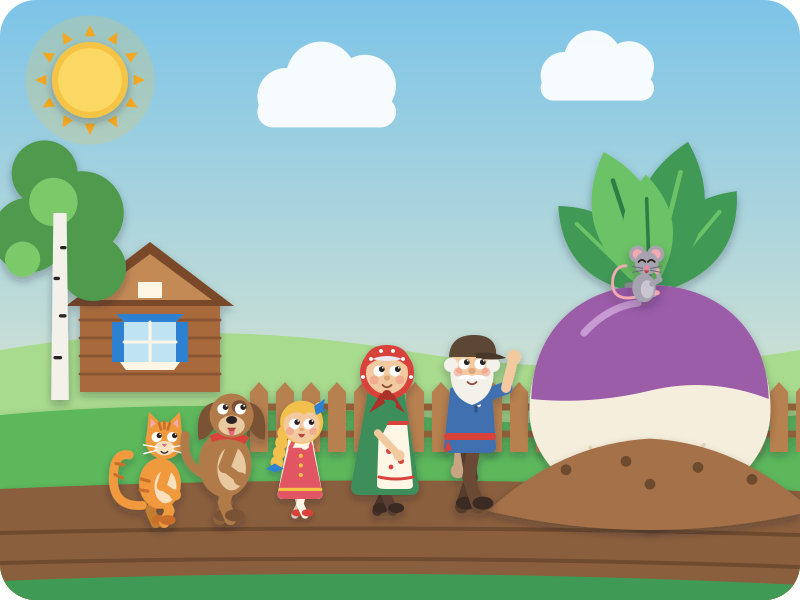
A folk tale from Russia
The Enormous Turnip
"Story, story — are your ears open?" Kai: "Open!"
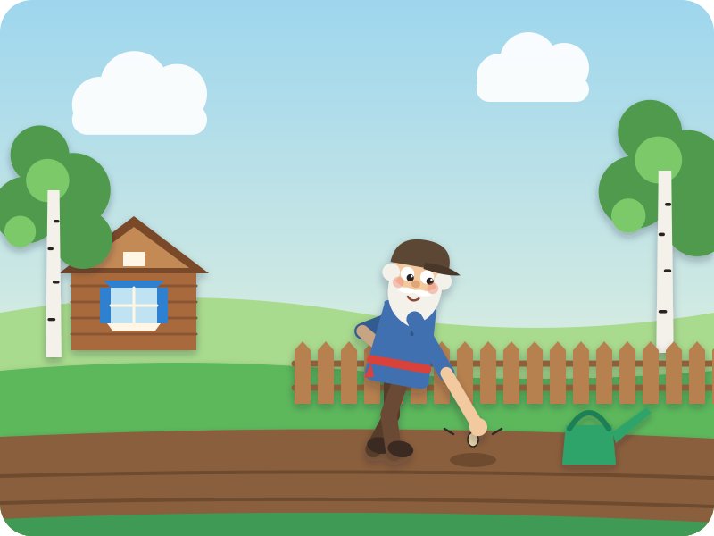
Once upon a time, in a little wooden house, there lived a Grandpa.
One spring morning, he planted one tiny turnip seed. Pat, pat, pat.
"Grow, little turnip! Grow sweet, grow strong!"
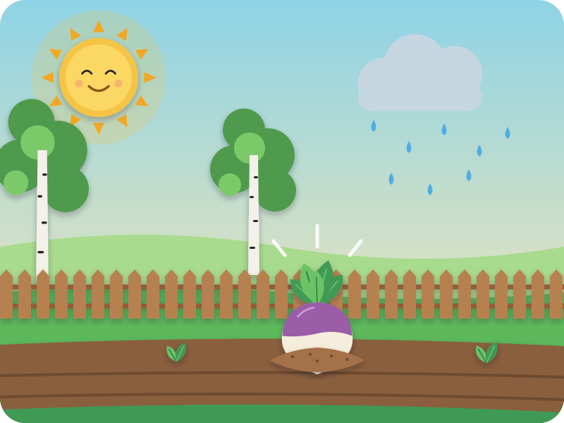
The sun shone. The rain fell — pitter, patter. Kai taps his fingers like rain
And the turnip grew… and grew… and GREW!
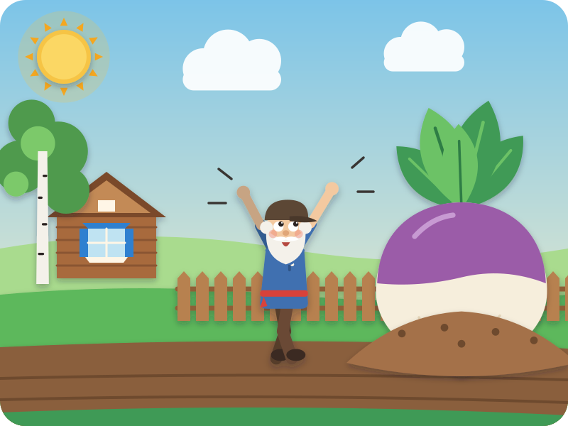
It grew so big it was ENORMOUS! Bigger than Grandpa!
"Oh my!" said Grandpa. "What a turnip! Time to pull you up for dinner."
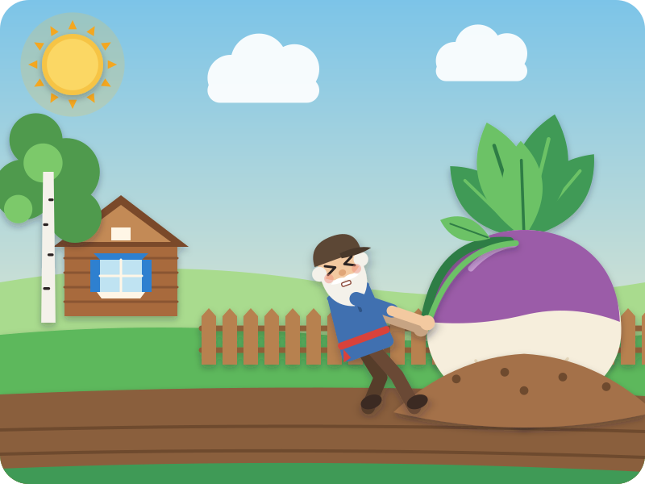
Grandpa held the turnip's leaves. He pulled and he pulled…
"We pull and we pull, but it won't come out!" Kai says it too
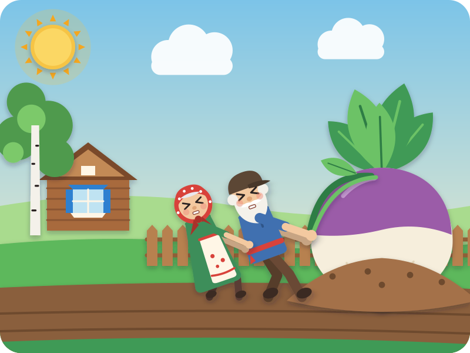
So Grandpa called, "Grandma! Come and help!"
Grandma held Grandpa. Grandpa held the turnip. They pulled and they pulled…
"We pull and we pull, but it won't come out!"
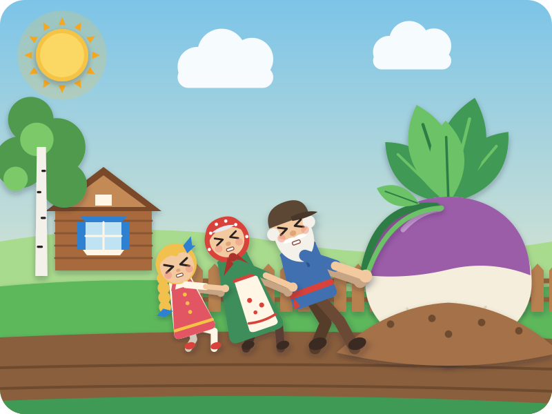
Grandma called, "Granddaughter! Come and help!"
Granddaughter held Grandma. Grandma held Grandpa. Grandpa held the turnip. They pulled and they pulled…
"We pull and we pull, but it won't come out!"
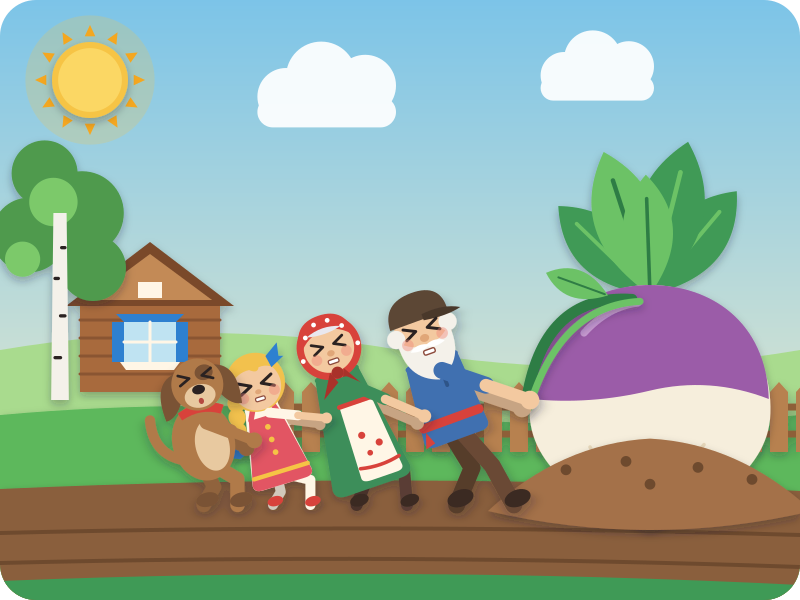
Granddaughter called, "Dog! Come and help!" "Woof!"
Dog held Granddaughter, and they all pulled and they pulled…
"We pull and we pull, but it won't come out!"
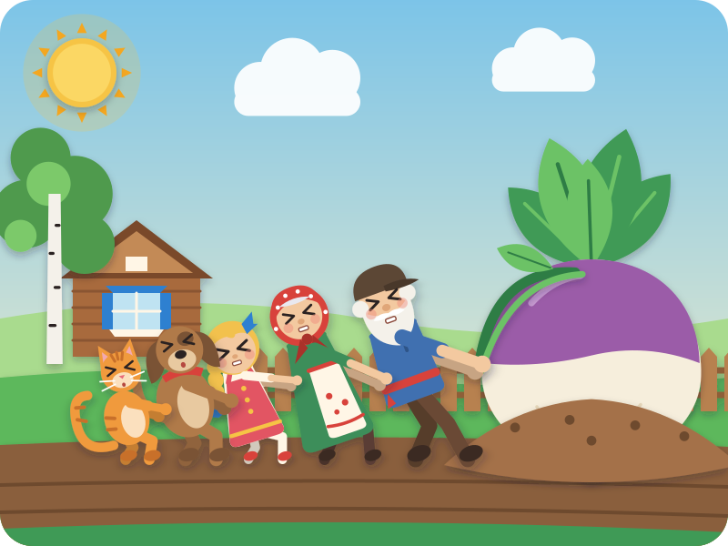
Dog called, "Cat! Come and help!" "Meow!"
Cat held Dog, and they all pulled and they pulled…
"We pull and we pull, but it won't come out!"
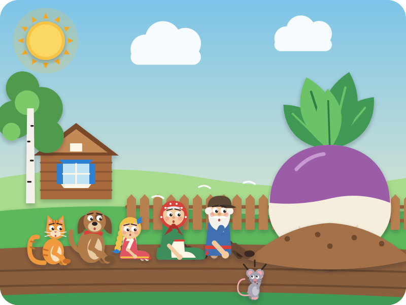
Everybody sat down. Puff, puff, puff. "It's too big," they sighed.
Then — squeak, squeak! Kai squeaks like a mouse — a tiny Mouse ran up. "Can I help?"
"You're so small!" said Cat. "Small helpers can help too," said Mouse.
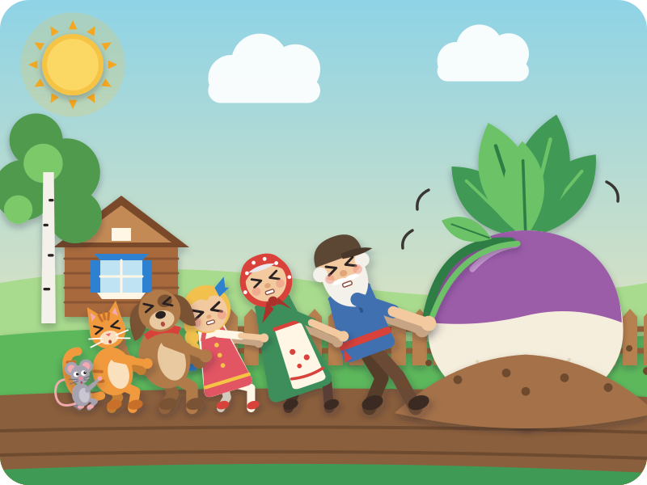
Mouse held Cat. Cat held Dog. Dog held Granddaughter. Granddaughter held Grandma. Grandma held Grandpa. Grandpa held the turnip.
All together now… "Heave… HO!" Kai grabs the air and leans back
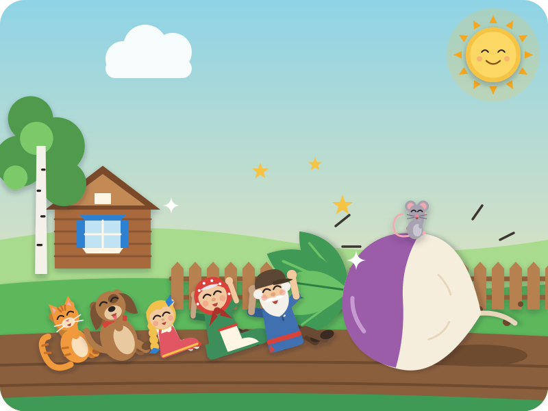
POP! Out came the turnip!
And everybody tumbled down — bump, bump, bump — onto the soft earth, laughing. Nobody was hurt.
And where was Mouse? Sitting right on top of the turnip!
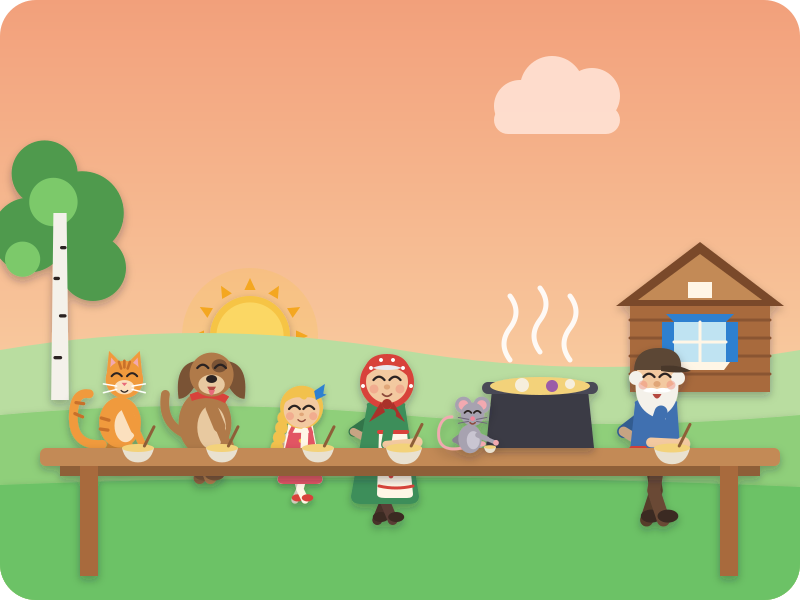
That night they made a big pot of turnip soup — enough for everyone.
And the tiny bowl? That was for Mouse. "Thank you, Mouse!"
Because even the smallest helper makes a big difference.
The End
"Snip, snap, snout — this tale's told out."
Swipe back to read it again
Driving? Tell it without the page · six beats
The picture book is for home, bedtime, or a passenger. In the car, tell it from memory — bold is Kai's part.
- Grandpa plants a tiny seed — "Grow sweet, grow strong!" — and it grows into an ENORMOUS turnip.
- Grandpa pulls: "We pull and we pull, but it won't come out!"
- He calls Grandma, then Granddaughter. Each one holds on to the one in front — "…but it won't come out!"
- Then Dog (woof!) and Cat (meow!) — still stuck!
- A tiny Mouse squeaks, "Can I help?" — squeak, squeak! Everyone pulls together: "Heave… HO!"
- POP! Out comes the turnip, everyone tumbles down laughing, and they share turnip soup — a tiny bowl for Mouse.
After the story · car-friendly wondering
"Who came to help first? And then who? Can you remember them all, all the way to Mouse?"
"Mouse was the smallest. Why did the turnip come out when Mouse helped?"
"What's something that's easier when we do it together?"
Where this story comes from
Repka (Репка, "the little turnip") is one of the best-known Russian folk tales. Alexander Afanasyev printed a version in his Russian Folk Tales in 1863, but his helpers are only Grandpa, Grandma, the granddaughter and an unnamed dog — no cat and no mouse. The version Russian children learn today comes from Konstantin Ushinsky's 1864 retelling for children: Grandpa, Grandma, the granddaughter, a dog called Zhuchka, a cat and a mouse, each called in turn to grab the one in front — "they pull and they pull, but they can't pull it out" — until the mouse joins and up it comes. Ushinsky's tale stops right there. This retelling is our own, for a 4-year-old: we gave the helpers simple names (Dog, Cat) and added the gentle tumble, the turnip soup and the little bowl for Mouse to make the point about the smallest helper clear. "Heave-ho!" is our English pulling chant, not a line from the Russian text.